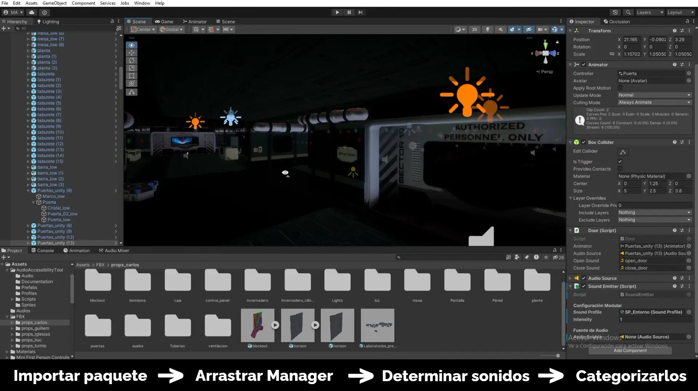
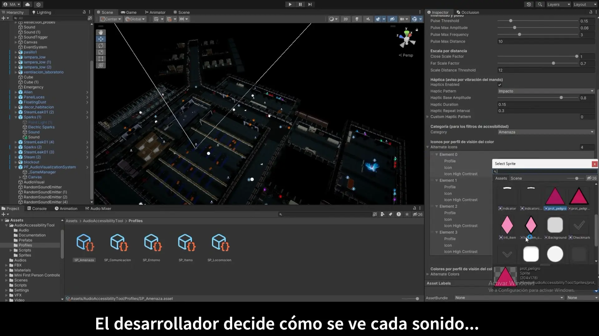
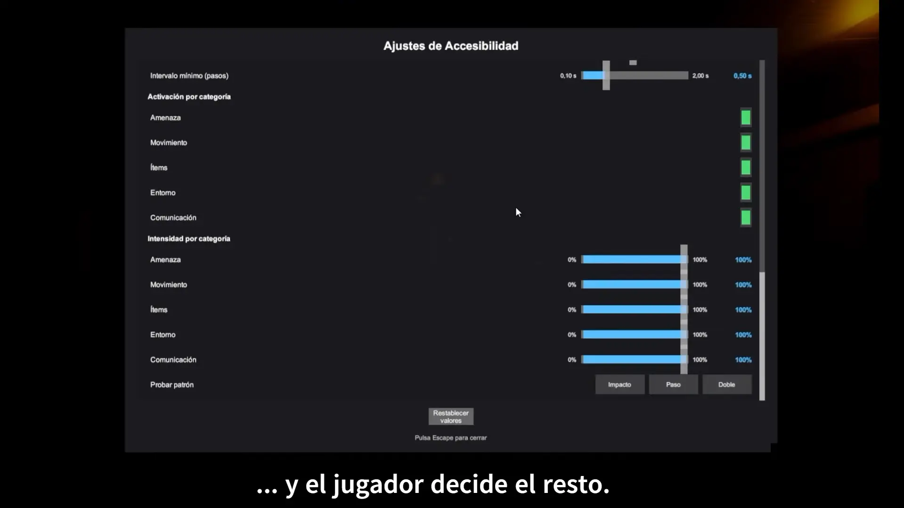
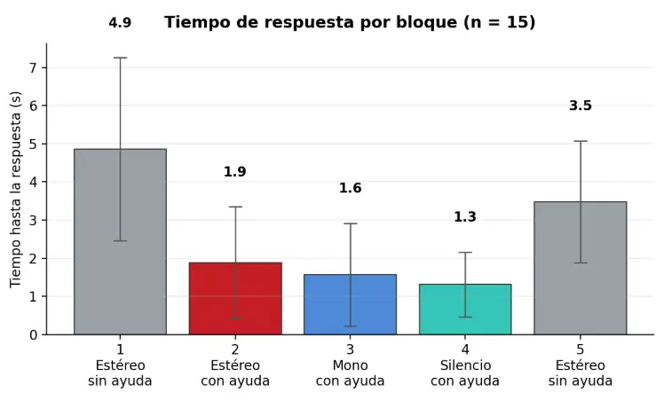
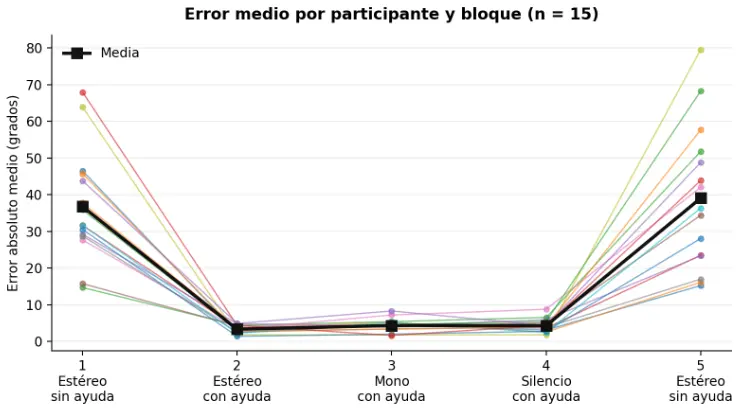

Solo Developer — Game Designer, UX/UI Designer, Programmer
Unity 2022.3 LTS (C#), Figma, Blender
Final Degree Project — CITM, Universitat Politècnica de Catalunya
A modular Unity tool that translates 3D spatial audio into visual indicators, allowing deaf and hard-of-hearing players to locate sound sources they cannot hear. Built as a reusable package any developer can drop into their own project.
I have congenital unilateral hearing loss. This project started from the frustration of losing critical information in games that rely on directional audio, and became an attempt to solve it in a way other developers could actually use.
The system detects active sound sources in the scene and projects them onto a 360° ring HUD, encoding direction through position, distance through scale and a numeric readout, and intensity through animation. A priority-based filtering system prevents visual overload when many sounds compete for attention.
Accessibility was designed in from the start: each sound category has its own shape as well as its own colour, and the palette is built on a luminance scale so categories stay distinguishable under protanopia, deuteranopia, tritanopia and full colour blindness. Controller haptics add a non-visual alert channel.
Everything is configured through ScriptableObject profiles — no code required. Developers can also lock individual options from the Inspector when a setting would conflict with their game's core design.



The tool was tested with 15 participants across 675 trials, measuring angular error and response time under four conditions: stereo audio, stereo with the tool, mono with the tool, and full silence with the tool.
Localisation error dropped from 36.8° to under 4.4°, a 91% improvement. Accurate localisations rose from 27% to 98%. Every participant improved. Crucially, performance stayed the same in mono and in complete silence — the system works without any audio at all.
The most relevant result was not the average, but the spread: individual error ranged from 14.7° to 68° without the tool, and from 1.8° to 6.5° with it. The system doesn't just improve performance — it levels the playing field between players.

